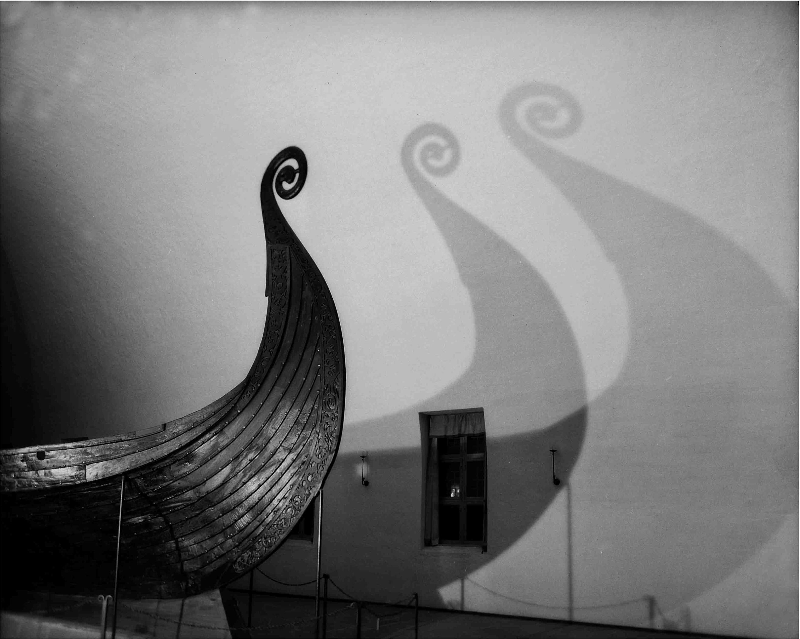

Projektbereich C. Bewertungen Ressourcen und symbolische Dimensionen von Kulturen
C 02 · Bilder des Mangels und des Überflusses. Ressourcen und ihre literarische Konstruktion im Kontext der „Griechischen Kolonisation“
 Das Teilprojekt untersucht die literarische Präsentation,
Einordnung und Bewertung agrarischer sowie sozialer Ressourcen in unterschiedlichen Räumen und Zeiten der griechischen Geschichte .
Es geht dabei um die Identifikation und Analyse der literarischen Verarbeitung von ressourcenbezogenen,
lebensweltlichen Erfahrungen im historischen Kontext der sogenannten
„großen griechischen Kolonisation“ des 8 . und 7 . Jh . v . Chr . sowie des Frühhellenismus (3 . Jh . v . Chr .) .
Das Teilprojekt untersucht die literarische Präsentation,
Einordnung und Bewertung agrarischer sowie sozialer Ressourcen in unterschiedlichen Räumen und Zeiten der griechischen Geschichte .
Es geht dabei um die Identifikation und Analyse der literarischen Verarbeitung von ressourcenbezogenen,
lebensweltlichen Erfahrungen im historischen Kontext der sogenannten
„großen griechischen Kolonisation“ des 8 . und 7 . Jh . v . Chr . sowie des Frühhellenismus (3 . Jh . v . Chr .) .
C 03 · Ressourcen und die Formierung von Gesellschaften, Siedlungsräumen und kulturellen Identitäten der italischen Halbinsel im ersten vorchristlichen Jahrtausend
 Das Konzept des SFB 1070 Ressourcen als Grundlage der Bildung und des Wandels sozialer Gruppen zu sehen,
wird in diesem Teilprojekt genutzt, um ein neues Verständnis der Zusammenhänge von Besiedlungsprozessen und
der Formierung von Gesellschaften und kulturellen Identitäten auf der italischen Halbinsel
des ersten Jahrtausends v . Chr . zu gewinnen . RessourcenKomplexe um Metalle und um landwirtschaftlich
nutzbaren Boden in Siedlungsräumen an dem von etruskischen
Städten dominierten Tyrrhenischen Meer und der „Magna Graecia“ werden vergleichend betrachtet .
Das Konzept des SFB 1070 Ressourcen als Grundlage der Bildung und des Wandels sozialer Gruppen zu sehen,
wird in diesem Teilprojekt genutzt, um ein neues Verständnis der Zusammenhänge von Besiedlungsprozessen und
der Formierung von Gesellschaften und kulturellen Identitäten auf der italischen Halbinsel
des ersten Jahrtausends v . Chr . zu gewinnen . RessourcenKomplexe um Metalle und um landwirtschaftlich
nutzbaren Boden in Siedlungsräumen an dem von etruskischen
Städten dominierten Tyrrhenischen Meer und der „Magna Graecia“ werden vergleichend betrachtet .
C 04 · Religiöse Ressourcen: Wertschöpfung und Wertkonvertierung von Ressourcen in Zentral- und Südasien
 Das Teilprojekt behandelt die Rolle von RessourcenKomplexen für die Bildung, den Erhalt und die Vergrößerung von
bedeutenden religiösen Institutionen in Süd- und Zentralasien . Im Rahmen von Feldforschungen in Indien, Kyrgyzstan und Iran
sollen ethnographische und ethnohistorische Daten zu religiösen Ressourcen erhoben werden . Die Fallbeispiele werden sozio-kulturelle
Praktiken der Wertschöpfung und Wertkonvertierung religiöser Ressourcen aufzeigen,
Verflechtungen zwischen Religion, Ökonomie und Staat identifizieren und vermitteln, wie Konflikte
um religiöse Ressourcen entstehen .
Das Teilprojekt behandelt die Rolle von RessourcenKomplexen für die Bildung, den Erhalt und die Vergrößerung von
bedeutenden religiösen Institutionen in Süd- und Zentralasien . Im Rahmen von Feldforschungen in Indien, Kyrgyzstan und Iran
sollen ethnographische und ethnohistorische Daten zu religiösen Ressourcen erhoben werden . Die Fallbeispiele werden sozio-kulturelle
Praktiken der Wertschöpfung und Wertkonvertierung religiöser Ressourcen aufzeigen,
Verflechtungen zwischen Religion, Ökonomie und Staat identifizieren und vermitteln, wie Konflikte
um religiöse Ressourcen entstehen .
C 05 · Profit und Verschwendung von Ressourcen. Die Schaffung von ideologischem Kapital während der Wikingerzeit und im Hochmittelalter in Nordeuropa
 Im Fokus der Untersuchung steht die Verschwendung bzw . Investition in profitorientiertes oder
ideologisches Kapital am Beispiel der mittelalterlichen Depotfunde und Kirchenbauten der Ostseeinsel Gotland .
Bei den Schatzfunden wird der Fragmentierungsgrad, die Ausführungsqualität, ikonographische Bedeutung und Herkunft
der Objekte aus anderen Wirtschaftsräumen analysiert. Im Fokus der Komplementärstudie stehen die Investitionsvolumen für den Bau,
die Ausstattung und die Ausschmückung der Kirchen, sowohl .....
Im Fokus der Untersuchung steht die Verschwendung bzw . Investition in profitorientiertes oder
ideologisches Kapital am Beispiel der mittelalterlichen Depotfunde und Kirchenbauten der Ostseeinsel Gotland .
Bei den Schatzfunden wird der Fragmentierungsgrad, die Ausführungsqualität, ikonographische Bedeutung und Herkunft
der Objekte aus anderen Wirtschaftsräumen analysiert. Im Fokus der Komplementärstudie stehen die Investitionsvolumen für den Bau,
die Ausstattung und die Ausschmückung der Kirchen, sowohl .....
C 06 · Reis und Heilpflanzen. Die kulturelle Konstruktion nährender und heilender Pflanzen in Südindien
 Das Projekt beschäftigt sich mit den südindischen Ressourcen Reis und Heilpflanzen .
Reis bildet die hauptsächliche Anbaupflanze in den Schwemmgebieten der südostindischen Flussdeltaregion,
Heilpflanzen wachsen vor allem in den Wäldern der Bergregionen Südindiens . In der ersten Untersuchung soll aufgezeigt werden,
wie die Reiswirtschaft und die Produkte Paddy und Reis in spezifische, historisch gewachsene Bedeutungsmuster und soziale Strukturen
eingewoben sind .
Das Projekt beschäftigt sich mit den südindischen Ressourcen Reis und Heilpflanzen .
Reis bildet die hauptsächliche Anbaupflanze in den Schwemmgebieten der südostindischen Flussdeltaregion,
Heilpflanzen wachsen vor allem in den Wäldern der Bergregionen Südindiens . In der ersten Untersuchung soll aufgezeigt werden,
wie die Reiswirtschaft und die Produkte Paddy und Reis in spezifische, historisch gewachsene Bedeutungsmuster und soziale Strukturen
eingewoben sind .
C 07 · Prähistorische Ikonen als Ressourcen in Vergangenheit und Gegenwart
 Die kulturelle Ressource „Ikone“ stellt Teil eines komplexen Prozesses dar und muss aus einer diachronen Perspektive analysiert werden . Für die erste Phase des Projekts ist eine Studie, sowohl der Schiffsgräber von Oseberg, Gokstad und Hedeby, als auch des Monuments von Jelling geplant . Die Bedeutung der Monumente aus identitäts- und nationsstiftenden Gründen ist bisher unerforscht. Mittels der kombinierten Untersuchung zur Bedeutung dieser Ikonen in Vergangenheit und Gegenwart soll aufgezeigt werden, dass die scheinbare archäologische Objektivität .....
Mehr lesen